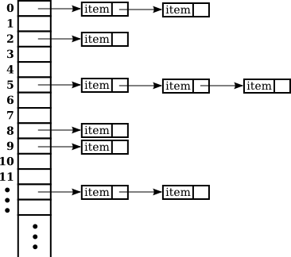

Maps
An array of N elements can be thought of as a way of associating some item with each of the integers 0, 1, ..., N-1. If i is one of these integers, it's possible to get the item associated with i, and it's possible to put a new item in the i-th position. These "get" and "put" operations define what it means to be an array.
A map is a kind of generalized array. Like an array, a map is defined by "get" and "put" operations. But in a map, these operations are defined not for integers 0, 1, ..., N-1, but for arbitrary objects of some specified type T. Associated to these objects of type T are objects of some possibly different type S.
In fact, some programming languages use the term associative array instead of "map" and use the same notation for associative arrays as for regular arrays. In those languages, for example, you might see the notation A["fred"] used to indicate the item associated to the string "fred" in an associative array A. Java does not use array notation for maps, unfortunately, but the idea is the same: A map is like an array, but the indices for a map are objects, not integers. In a map, an object that serves as an "index" is called a key. The object that is associated with a key is called a value. Note that a key can have at most one associated value, but the same value can be associated to several different keys. A map can be considered to be a set of "associations," where each association is a key/value pair.
The Map Interface
In Java, maps are defined by the interface java.util.Map, which includes put and get methods as well as other general methods for working with maps. The map interface, Map<K,V>, is parameterized by two types. The first type parameter, K, specifies the type of objects that are possible keys in the map; the second type parameter, V, specifies the type of objects that are possible values in the map. For example, a map of type Map<Date,Color> would associate values of type Color to keys of type Date. For a map of type Map<String,String>, both the keys and the values are of type String.
Suppose that map is a variable of type Map<K,V> for some specific types K and V. Then the following are some of the methods that are defined for map:
- map.get(key) — returns the object of type V that is associated by the map to the key. If the map does not associate any value with key, then the return value is null. Note that it's also possible for the return value to be null when the map explicitly associates the value null with the key. Referring to "map.get(key)" is similar to referring to "A[key]" for an array A. (But note that there is nothing like an IndexOutOfBoundsException for maps.)
- map.put(key,value) — Associates the specified value with the specified key, where key must be of type K and value must be of type V. If the map already associated some other value with the key, then the new value replaces the old one. This is similar to the command "A[key] = value" for an array.
- map.putAll(map2) — if map2 is another map of type Map<K,V>, this copies all the associations from map2 into map.
- map.remove(key) — if map associates a value to the specified key, that association is removed from the map.
- map.containsKey(key) — returns a boolean value that is true if the map associates some value to the specified key.
- map.containsValue(value) — returns a boolean value that is true if the map associates the specified value to some key.
- map.size() — returns an int that gives the number of key/value associations in the map.
- map.isEmpty() — returns a boolean value that is true if the map is empty, that is if it contains no associations.
- map.clear() — removes all associations from the map, leaving it empty.
The put and get methods are certainly the most commonly used of the methods in the Map interface. In many applications, these are the only methods that are needed, and in such cases a map is really no more difficult to use than a standard array.
Java includes two classes that implement the interface Map<K,V>: TreeMap<K,V> and HashMap<K,V>. In a TreeMap, the key/value associations are stored in a sorted tree, in which they are sorted according to their keys. For this to work, it must be possible to compare the keys to one another. This means either that the keys must implement the interface Comparable<K>, or that a Comparator must be provided for comparing keys. (The Comparator can be provided as a parameter to the TreeMap constructor.) Note that in a TreeMap, as in a TreeSet, the compareTo() (or compare()) method is used to decide whether two keys are to be considered the same. This can have undesirable consequences if the comparison method does not agree with the usual notion of equality, and you should keep this in mind when using TreeMaps.
A HashMap does not store associations in any particular order, so the keys that can be used in a HashMap do not have to be comparable. However, the key class should have reasonable definitions for the equals() method and for a hashCode() method that is discussed later in this section; most of Java's standard classes define these methods correctly. Most operations are a little faster on HashMaps than they are on TreeMaps. In general, you should use a HashMap unless you have some particular need for the ordering property of a TreeMap. In particular, if you are only using the put and get operations, you can safely use a HashMap.
Let's consider an example where maps would be useful. In Subsection 7.5.2, I presented a simple PhoneDirectory class that associated phone numbers with names. That class defined operations addEntry(name,number) and getNumber(name), where both name and number are given as Strings. In fact, the phone directory is acting just like a map, with the addEntry method playing the role of the put operation and getNumber playing the role of get. In a real programming application, there would be no need to define a new class; we could simply use a map of type Map<String,String>. A directory could be defined as
Map<String,String> directory = new TreeMap<>();(using TreeMap so that the entries are kept in sorted order by name). Then directory.put(name,number) would record a phone number in the directory and directory.get(name) would retrieve the phone number associated with a given name.
Views, SubSets, and SubMaps
A Map is not a Collection, and maps do not implement all the operations defined on collections. In particular, there are no iterators for maps. Sometimes, though, it's useful to be able to iterate through all the associations in a map. Java makes this possible in a roundabout but clever way. If map is a variable of type Map<K,V>, then the method
map.keySet()returns the set of all objects that occur as keys for associations in the map. The value returned by this method is an object that implements the interface Set<K>. The elements of this set are the map's keys. The obvious way to implement the keySet() method would be to create a new set object, add all the keys from the map, and return that set. But that's not how it's done. The value returned by map.keySet() is not an independent object. It is what is called a view of the actual objects that are stored in the map. This "view" of the map implements the Set<K> interface, but it does it in such a way that the methods defined in the interface refer directly to keys in the map. For example, if you remove a key from the view, that key—along with its associated value—is actually removed from the map. It's not legal to add an object to the view, since it doesn't make sense to add a key to a map without specifying the value that should be associated to the key. Since map.keySet() does not create a new set, it's very efficient, even for very large maps.
One of the things that you can do with a Set is get an Iterator for it and use the iterator to visit each of the elements of the set in turn. We can use an iterator for the key set of a map to traverse the map. For example, if map is of type Map<String,Double>, we could write:
Set<String> keys = map.keySet(); // The set of keys in the map.
Iterator<String> keyIter = keys.iterator();
System.out.println("The map contains the following associations:");
while (keyIter.hasNext()) {
String key = keyIter.next(); // Get the next key.
Double value = map.get(key); // Get the value for that key.
System.out.println( " (" + key + "," + value + ")" );
}Or we could do the same thing more easily, avoiding the explicit use of an iterator, with a for-each loop:
System.out.println("The map contains the following associations:");
for ( String key : map.keySet() ) { // "for each key in the map's key set"
Double value = map.get(key);
System.out.println( " (" + key + "," + value + ")" );
}If the map is a TreeMap, then the key set of the map is a sorted set, and the iterator will visit the keys in ascending order. For a HashMap, the keys are visited in an arbitrary, unpredictable order.
The Map interface defines two other views. If map is a variable of type Map<K,V>, then the method:
map.values()returns an object of type Collection<V> that contains all the values from the associations that are stored in the map. The return value is a Collection rather than a Set because it can contain duplicate elements (since a map can associate the same value to any number of keys). The method:
map.entrySet()returns a set that contains all the associations from the map. The elements in the set are objects of type Map.Entry<K,V>. Map.Entry<K,V> is defined as a static nested interface inside the interface Map<K,V>, so its full name contains a period. However, the name can be used in the same way as any other type name. (The return type of the method map.entrySet() is written as Set<Map.Entry<K,V>>. The type parameter in this case is itself a parameterized type. Although this might look confusing, it's just Java's way of saying that the elements of the set are of type Map.Entry<K,V>.) The information in the set returned by map.entrySet() is actually no different from the information in the map itself, but the set provides a different view of this information, with different operations. Each Map.Entry object contains one key/value pair, and defines methods getKey() and getValue() for retrieving the key and the value. There is also a method, setValue(value), for setting the value; calling this method for a Map.Entry object will modify the map itself, just as if the map's put method were called. As an example, we can use the entry set of a map to print all the key/value pairs in the map. This is more efficient than using the key set to print the same information, as I did in the above example, since we don't have to use the get() method to look up the value associated with each key. Suppose again that map is of type Map<String,Double>. Then we can write:
Set<Map.Entry<String,Double>> entries = map.entrySet();
Iterator<Map.Entry<String,Double>> entryIter = entries.iterator();
System.out.println("The map contains the following associations:");
while (entryIter.hasNext()) {
Map.Entry<String,Double> entry = entryIter.next();
String key = entry.getKey(); // Get the key from the entry.
Double value = entry.getValue(); // Get the value.
System.out.println( " (" + key + "," + value + ")" );
}or, using a for-each loop to avoid some of the ugly type names:
System.out.println("The map contains the following associations:");
for ( Map.Entry<String,Double> entry : map.entrySet() ) {
System.out.println( " (" + entry.getKey() + "," + entry.getValue() + ")" );
}This is certainly a place where it would be convenient to use var to declare the variables (See Subsection 4.8.2). With var, the example using an iterator becomes:
var entries = map.entrySet();
var entryIter = entries.iterator();
System.out.println("The map contains the following associations:");
while (entryIter.hasNext()) { . . .Maps are not the only place in Java's generic programming framework where views are used. For example, the interface List<T> defines a sublist as a view of a part of a list. If list implements the interface List<T>, then the method
list.subList( fromIndex, toIndex )where fromIndex and toIndex are integers, returns a view of the part of the list consisting of the list elements in positions between fromIndex and toIndex (including fromIndex but excluding toIndex). This view lets you operate on the sublist using any of the operations defined for lists, but the sublist is not an independent list. Changes made to the sublist are actually made to the original list.
Similarly, it is possible to obtain views that represent certain subsets of a sorted set. If set is of type TreeSet<T>, then set.subSet(fromElement,toElement) returns a Set<T> that contains all the elements of set that are between fromElement and toElement (including fromElement and excluding toElement). The parameters fromElement and toElement must be objects of type T. For example, if words is a set of type TreeSet<String> in which all the elements are strings of lower case letters, then words.subSet("m","n") contains all the elements of words that begin with the letter 'm'. This subset is a view of part of the original set. That is, creating the subset does not involve copying elements. And changes made to the subset, such as adding or removing elements, are actually made to the original set. The view set.headSet(toElement) consists of all elements from the set which are strictly less than toElement, and set.tailSet(fromElement) is a view that contains all elements from the set that are greater than or equal to fromElement.
The class TreeMap<K,V> defines three submap views. A submap is similar to a subset. A submap is a Map that contains a subset of the keys from the original Map, along with their associated values. If map is a variable of type TreeMap<K,V>, and if fromKey and toKey are of type K, then map.subMap(fromKey,toKey) returns a view that contains all key/value pairs from map whose keys are between fromKey and toKey (including fromKey and excluding toKey). There are also views map.headMap(toKey) and map.tailMap(fromKey) which are defined analogously to headSet and tailSet. Suppose, for example, that phoneBook is a map of type TreeMap<String,String> in which the keys are names and the values are phone numbers. We can print out all the entries from phoneBook where the name begins with "M" as follows:
Map<String,String> ems = phoneBook.subMap("M","N");
// This submap contains entries for which the key is greater
// than or equal to "M" and strictly less than "N".
if (ems.isEmpty()) {
System.out.println("No entries beginning with M.");
}
else {
System.out.println("Entries beginning with M:");
for ( var entry : ems.entrySet() ) {
// Note: type for entry is Map.Entry<String,String>
// but it's easier to user var to declare the variable!
System.out.println( " " + entry.getKey() + ": " + entry.getValue() );
}
}Subsets and submaps are probably best thought of as generalized search operations that make it possible to find all the items in a range of values, rather than just to find a single value. For example, suppose that a database of scheduled events is stored in a map of type TreeMap<DateTime,Event> in which the a key gives the date and time of an event, and suppose you want a listing of all events that are scheduled for some time on July 4, 2022. Just make a submap containing all keys in the range from 12:00 AM, July 4, 2022 to 12:00 AM, July 5, 2022, and output all the entries from that submap. This type of search, which is known as a subrange query, is quite common.
Hash Tables and Hash Codes
HashSets and HashMaps are implemented using a data structure known as a hash table. You don't need to understand hash tables to use HashSets or HashMaps, but any computer programmer should be familiar with hash tables and how they work.
Hash tables are an elegant solution to the search problem. A hash table, like a HashMap, stores key/value pairs. Given a key, you have to search the table for the corresponding key/value pair. When a hash table is used to implement a set, there are no values, and the only question is whether or not the key occurs in the set. You still have to search for the key to check whether it is there or not.
In most search algorithms, in order to find the item you are interested in, you have to look through a bunch of other items that don't interest you. To find something in an unsorted list, you have to go through the items one-by-one until you come to the one you are looking for. In a binary sort tree, you have to start at the root and move down the tree until you find the item you want. When you search for a key/value pair in a hash table, you can go directly to the location that contains the item you want. You don't have to look through any other items. (This is not quite true, but if the hash table is working properly, it's close.) The location of the key/value pair is computed from the key: You just look at the key, and then you go directly to the location where it is stored.
How can this work? If the keys were integers in the range 0 to 99, we could store the key/value pairs in an array, A, of 100 elements. The key/value pair with key K would be stored in A[K]. The key takes us directly to the location of the key/value pair. The problem is that there are usually far too many different possible keys for us to be able to use an array with one location for each possible key. For example, if the key can be any value of type int, then we would need an array with over four billion locations—quite a waste of space if we are only going to store, say, a few thousand items! If the key can be a string of any length, then the number of possible keys is infinite, and using an array with one location for each possible key is simply impossible.
Nevertheless, hash tables store their data in an array, and the array index where a key is stored is based on the key. The index is not equal to the key, but it is computed from the key. The array index for a key is called the hash code for that key. A function that computes a hash code, given a key, is called a hash function. To find a key in a hash table, you just have to compute the hash code of the key and go directly to the array location given by that hash code. If the hash code is 17, look in array location number 17.
Now, since there are fewer array locations than there are possible keys, it's possible that we might try to store two or more keys in the same array location. This is called a collision. A collision is not an error. We can't reject a key just because another key happened to have the same hash code. A hash table must be able to handle collisions in some reasonable way. In the type of hash table that is used in Java, each array location actually holds a linked list of key/value pairs (possibly an empty list). When two items have the same hash code, they are in the same linked list. The structure of the hash table looks something like this:

In this diagram, there are two items with hash code 0, no items with hash code 1, one item with hash code 2, and so on. In a properly designed hash table, most of the linked lists are of length zero or one, and the average length of the lists is less than one. Although the hash code of a key doesn't necessarily take you directly to that key, there are probably no more than one or two other items that you have to look through before finding the key you want. For this to work properly, the number of items in the hash table should be somewhat less than the number of locations in the array. In Java's implementation, whenever the number of items exceeds 75% of the array size, the array is replaced by a larger one and all the items in the old array are inserted into the new one. (This is why adding one new item will sometimes cause the ordering of all the items in the hash table to change completely.)
There is still the question of where hash codes come from. Every object in Java has a hash code. The Object class defines the method hashCode(), which returns a value of type int. When an object, obj, is stored in a hash table that has N locations, a hash code in the range 0 to N-1 is needed. This hash code is computed as Math.abs(obj.hashCode()) % N, the remainder when the absolute value of obj.hashCode() is divided by N. (The Math.abs is necessary because obj.hashCode() can be a negative integer, and we need a non-negative number to use as an array index.)
For hashing to work properly, two objects that are equal according to the equals() method must have the same hash code. In the Object class, this condition is satisfied because both equals() and hashCode() are based on the address of the memory location where the object is stored. However, as noted in Subsection 10.1.6, many classes redefine the equals() method. If a class redefines the equals() method, and if objects of that class will be used as keys in hash tables, then the class must also redefine the hashCode() method. For example, in the String class, the equals() method is redefined so that two objects of type String are considered to be equal if they contain the same sequence of characters. The hashCode() method is also redefined in the String class, so that the hash code of a string is computed from the characters in that string rather than from its location in memory. For Java's standard classes, you can expect equals() and hashCode() to be correctly defined. However, you might need to define these methods in classes that you write yourself.
Writing a good hash function is something of an art. In order to work well, the hash function must spread the possible keys fairly evenly over the hash table. Otherwise, the items in a table can be concentrated in a subset of the available locations, and the linked lists at those locations can grow to a large size; that would destroy the efficiency that is the major reason for hash tables to exist in the first place. However, I won't cover techniques for creating good hash functions in this book.